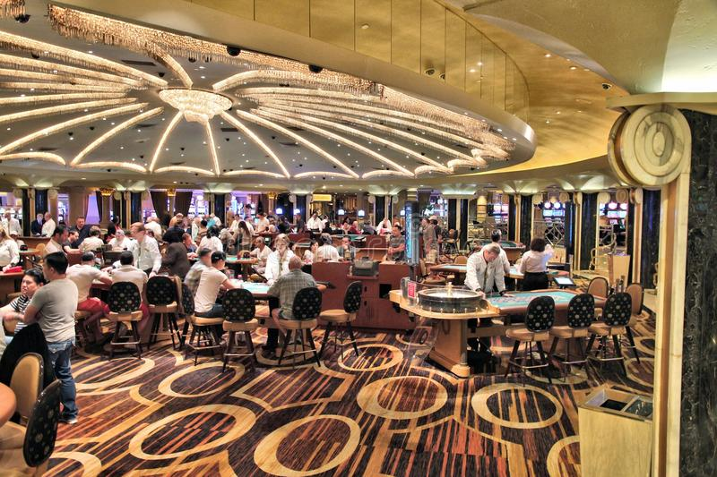

Las Vegas, the gambling capital of the world, is known for its many luxorious casinos. In fact, there are over 50 casinos on the Vegas Strip ALONE! But, have you ever asked yourself, "How could someone get so addicted to gambling?", or "How can an individual spend so long in a casino?", well Im here to tell you the secrets about casinos that may come as a suprise.
Windows?
To start, casinos do not have windows. Well atleast not in the gaming areas. You might be suprised by this, or may even question it. But, most casinos do not have windows. Why? Good question! Casinos have their ways of retaining people, more importantly the players. One way to achieve retention is to have no windows to the outside. This is so people who are playing and gambling away their money will continue for longer because without being able to see out of a window, their internal clocks can't keep time as well. To add to having no windows, casinos also do not have clocks. This again is to keep people in the casino for longer without them knowing. Yes, you can still wear a watch and have your smartphone. It's not like they prevent you from knowing the time, but when you are gambling you will forget to check the time as your focus is fully on your money.
Free drinks!
Another tactic casinos use is offering FREE drinks. Yes, you read that correctly FREE. As long as you are either at a table game, or video game such as a slot machine or video poker, a server will approach you and ask if you'd like a drink. And they are completely free, but they do appreciate tips. I actually went to Las Vegas over the summer for my first time, and this suprised me. The fact that I could get a free beverage of my choice for a dollar(tip) sounded almost too good to be true. It's also not just water, or soft drinks, but you can order mixed drinks, cocktails, bottled drinks, and so on. Technically, my thought was correct, it is too good to be true. The reason casinos offer this is due to the Casino's Edge on all games. They actually profit by giving out free drinks to only people that are playing. The casino feed the players alcoholic beverages which in turn causes the players to either stay longer, or play worse. Let me tell you, it will do both.
Here are some other tricks casinos use:
- Floor plan
- Blacked out doors
- Music and lights
- Artifical smells
There are other sneaky tactics similar to these two. In fact, there's a bunch of them. If you are interested in learning more click on the links below.